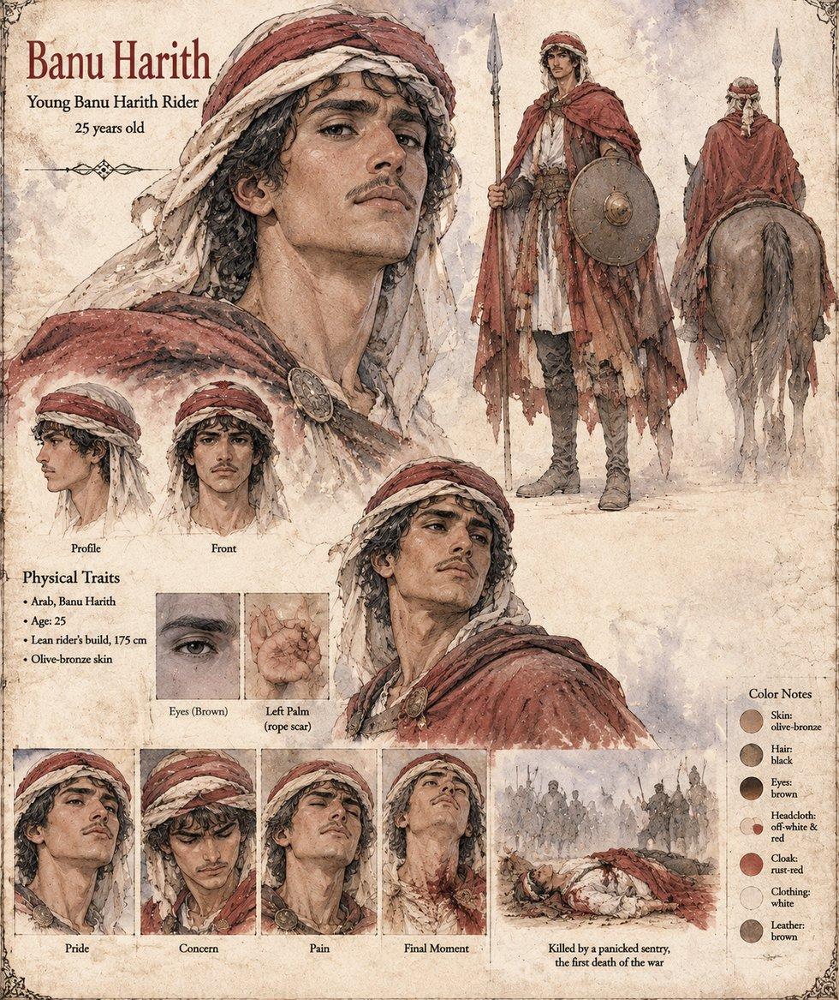

The Banu Harith Rider
Young rider of the Banu Harith · unnamed · sent to demand a judgment ratified · the first death of the war · twenty-five by the sheet
A young rider of the Banu Harith, sent to the Banu Kathir elders to demand that they formally ratify a judgment already begun without them. He is killed by a panicked sentry, not by design, and is the first death of the war, not Malik's, though every man on both sides would have told you in the war's later months that it should have been. The death demands a reply in kind, and three nights later the Banu Harith raid a Banu Kathir well to collect it, killing two herdsmen, one of them Salim. The manuscript gives the rider no name.
The manuscript makes the sentry half the rider's age. At the rider's twenty-five on this sheet that would put the sentry near twelve, and the sentry's own sheet draws a boy of fifteen to seventeen, so the two sheets do not quite agree with each other or with the manuscript's arithmetic.
The sheet draws him in a lean rider's build, with olive-bronze skin, short dark curls under a rust-red-banded off-white headcloth, a thin new moustache, brown eyes and a healed rope scar across the left palm, in a rust-red cloak clasped with a round brooch over a white shirt and soft riding boots, with a spear and a round hide shield and a horse behind him. Its expression panels run pride, concern, pain and the final moment, and its last scene, Killed by a panicked sentry, the first death of the war, shows him fallen in the dust under his red cloak with armed men standing off behind. The age of twenty-five, the scar and everything visual are the sheet's.